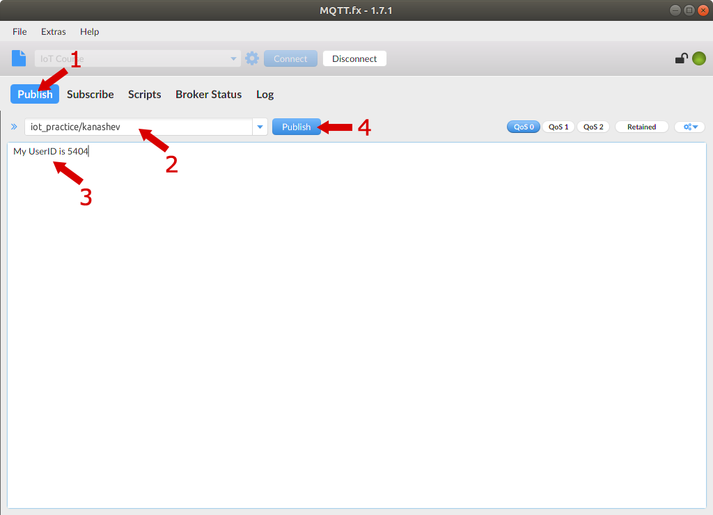
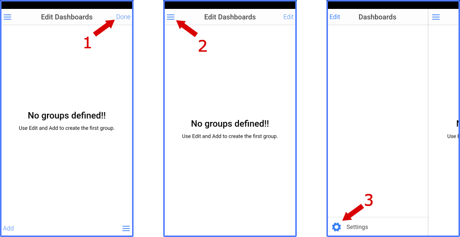

Клиенты MQTT (Виртуальная лампочка)
Введение
Для отработки практических навыков по организации взаимодействия по протоколу MQTT давайте поэксперементируем с другими клиентами MQTT. Утилиты mosquitto_pub и mosquitto_sub в некоторых случаях использовать неудобно. В рамках этой части практикума будем использовать графические приложения.
Идентификатор пользователя
В некоторых наших заданиях понадобится ваш уникальный идентификатор пользователя в IT Академии Samsung. Для этого перейдите к нашему электронному курсу на сайте https://myitschool.ru/edu/, и рядом со своим именем в правом верхнем углу нажмите на стрелку (1), а в раскрывшемся меню выберите пункт «О пользователе» (2).
Посмотрите в браузере на адресную строку. В ней вы увидите запись id=число (3). Вот это число и будет тем самым <UserID> (на рисунке 5404), который вам и нужно будет использовать во всех тех случаях, где говорится об идентификаторе пользователя в IT Академии Samsung.
Графический клиент MQTT.fx
Установка MQTT.fx
Одним из самых простых и удобных клиентов для работы с MQTT является приложение MQTT.fx. К сожалению, новый владелец этого программного продукта предоставляет его на платной основе, но всегда есть возможность воспользоваться прежней бесплатной версией!
Бесплатная версия (1.7.1) приложения MQTT.fx скорее всего уже установлена у нас в лаборатории, и можно смело переходить к следующему пункту, но если нет, то MQTT.fx можно скачать из репозитория. Для наших компьютеров понадобится 64-разрядный пакет для Debian (если вы работаете со своим компьютером, то выберите соответствующую версию и установите ее самостоятельно).
Скачиваем файл mqttfx-1.7.1-64bit.deb в каталог Загрузки:
В терминале устанавливаем скачанный файл, для чего наберем (для переключения на русский язык и обратно используется сочетание клавиш Win+Пробел):
sudo dpkg -i ~/Загрузки/mqttfx-1.7.1-64bit.deb
Настройка подключения
Запускаем MQTT.fx. Теперь необходимо настроить подключения к серверу, для чего следует нажать на иконку с шестерёнкой.
Далее введём информацию о MQTT-брокере:
Теперь убедимся, что выбран созданный профиль (1), и подключимся к серверу нажатием кнопки Connect (2)
Если всё настроено правильно, и подключение к брокеру установлено, то загорится зелёный индикатор
Публикация и подписка
Переключимся на вкладку Subscribe (1), оформим подписку на все топики. Для этого в текстовое поле (2) введём символ # и нажмём Subscribe (3)
После этого мы станем получать данные с реального сервера. В верхней части (1) приложения можно видеть сами топики, а выбрав один из них, в нижней части (2) – сами сообщения
Для публикации сообщений перейдём во вкладку Publish (1). Зададим имя топика (2), введём текст для отправки (3) и нажмём кнопку Publish (4).
Давайте в топик iot_practice/<ваша_фамилия> отправим сообщение «My UserID is <UserID>», только вместо <UserID> укажите ваш идентификатор, который вы нашли ранее:

Теперь вернемся на вкладку Subscribe (1) и проверим, что действительно появился такой топик, и в нём находится наше сообщение (3).
Если вы не видите своё сообщение, то прокрутите список топиков. Мы работаем с сервером, на который приходит много данных, и ваше сообщение где-то среди них.
Чтобы всё-таки не терять свои сообщения среди других, отпишемся (Unsubscribe) от приема всех сообщений.
Далее мы будем работать только с сообщениями топика iot_practice и всех его субтопиков, поэтому имеет смысл подписаться только на них.
Виртуальная лампочка
Хорошо, с топиками работать мы научились. Но в целом топик – это достаточно абстрактное понятие. Давайте наделим их полезной нагрузкой – придадим топикам смысл!
Если у вас на компьютере установлена система контроля версий Git (на компьютерах лаборатории – точно установлена), то клонируем репозиторий https://github.com/iot-academy/fake_lamp
git clone https://github.com/iot-academy/fake_lamp
Если же Git не установлен, то заходим в любом браузере по тому же адресу https://github.com/iot-academy/fake_lamp, скачиваем код в виде ZIP-архива,
и распаковываем его в какой-нибудь каталог.
Под Linux запускаем приложение Файлы (1), переходим в домашнюю папку (2) (или ту, в которую распаковали архив) и открываем папку fake_lamp (3).

В каталоге js выбираем файл app.js
и открываем его в текстовом редакторе (правая кнопка мыши, Открыть в Текстовый редактор).
В самом начале находятся настройки подключения к MQTT-брокеру
Исправьте значения для полей:
Номер порта 1884 – это не ошибка, так и должно быть! Сохраняем файл, и закрываем его.
В основном каталоге нашей виртуальной лампочки открываем файл index.html (или у вас он может отображаться просто как index) в браузере.
У вас должен запуститься браузер, в котором будет отображаться лампочка
Внимание!
Если вы работаете с ноутбуком, то у вас на клавише F12 может находиться функция включения/отключения беспроводной сети WiFi – проверьте положение переключателя Fn, чтобы внезапно не отключиться от сети!
Нажмем клавишу F12 на клавиатуре (или сочетание клавиш Ctrl+Shift+I), после чего на вкладке Console/Консоль (1) убедимся, что наша лампочка подключилась к MQTT-брокеру (должна быть надпись «connected» (2))
Повторным нажатием F12 (или Ctrl+Shift+I) можно вернуть браузер к привычному виду, или чтобы панель разработчика не мешалась и не перекрывала изображение лампочки её можно закрепить справа (или слева)
Чтобы включить эту лампочку, нужно отправить сообщение on в топик iot_practice/<UserID>/lamp, где вместо <UserID> нужно указать свой идентификатор пользователя в IT Академии Samsung (UserID), например, для пользователя с UserID = 5404 имя этого топика будет iot_practice/5404/lamp.
Если вернуться в браузер к нашей лампочке, то можно увидеть, что она включилась
Чтобы выключить лампу, нужно отправить сообщение off в тот же топик. Проделайте это самостоятельно.
На самом деле наша лампочка еще более «умная» – в нее встроен диммер, позволяющий регулировать яркость ее свечения!
Отправим сообщение с желаемым процентом яркости, например, 61, в топик iot_practice/<UserID>/lamp/value, и если посмотреть в браузере на лампочку, то увидим, что ее яркость стала соответствовать переданному значению.
Если лампочку выключить, а потом снова включить, то ее яркость останется на прежнем уровне.
Таким образом, у нас есть устройство (лампочка), которое подписалось на сообщения MQTT-брокера, и управляется командами в этих сообщениях.
Мобильное приложение
Современные смартфоны по своим техническим характеристикам во многом превосходят многие персональные компьютеры. Более того, рынок мобильных приложений сейчас развивается значительно стремительнее, чем desktop, а потому совершенно не удивительно, что MQTT-клиент может быть установлен на смартфоне, а значит управлять нашей лампочкой можно прямо с него.
Для Android есть достаточно много таких клиентов, а вот с iOS дела обстоят значительно хуже.
Некоторые MQTT-клиенты позволяют создавать графические элементы управления (виджеты), чтобы не вводить текстовые сообщения в топики, и не запоминать их все – это гораздо удобнее!
Есть достаточно простой и бесплатный графический клиент IoT OnOff, работающий как под Android, так и iOS. Мы будем рассматривать его на примере версии под Android (под iOS должно быть все крайне похоже).
Сначала приложение нужно установить. Можно это сделать через GooglePlay, поискав в нем приложение IoT OnOff (для iOS поступить следует также – поискать приложение в AppStore).
У приложения IoT OnOff достаточно очевидная иконка:
После установки находим это приложение и запускаем его (1). При первом запуске нажимаем кнопку Next step (2).
На следующем экране знакомимся с условиями использования программы, проматывая экран до конца (1), после чего нажимаем на кнопку I agree (2).
В результате приложение запустится и произведёт демонстрацию возможностей своих элементов на панели Garden. Зайдем в основное меню программы (1). Мы можем переключиться на разные панели (Dashboards), например, давайте выберем панель Swimming pool (2). Как можно увидеть, в бесплатной версии доступно только 10 виджетов — графических элементов.
Давайте сначала удалим всё лишнее, чтобы ограничения не сказывались на нашей работе.
Снова зайдем в меню приложения (1), нажмем на Edit (2), тем самым перейдем в режим редактирования списка панелей. Для удаления существующей панели, сдвинем её влево (3).
Нажмём на кнопку Delete (4), и подтвердим своё решение нажатием кнопки OK (5). Повторим действия (3)–(5) со всеми оставшимися панелями.
После удаления всех панелей нажмите на надписи Done в правом верхнем углу (1) – этим мы завершим процесс редактирования. Снова войдем в главное меню приложения (2), и перейдем к пункту настроек – Settings (3).

Далее выбираем пункт Configuration (1), отключаемся от текущего MQTT-брокера (2), и заходим в настройки MQTT Broker(3). Нужно заменить значения Host (4), Port (5), и отключить WebSockets (6).
После чего нажмите Ready (7) в правом верхнем углу. К сожалению, это дефект этой программы, и без такой операции мы не сможем изменить дальнейшие настройки (хотя может быть разработчики уже и исправили эту ошибку). Снова заходим в настройки MQTT Broker (8), и выбираем пункт Authentication (9).
Заполняем параметры аутентификации: User (1), Password (2), включаем параметр Use authentication (3). Подтверждаем корректность ввода нажатием на Ready (4). Затем в самом низу экрана нажимаем кнопку Save broker to list (5).
При желании можно посмотреть список сохраненных брокеров (6), но это не обязательно. Завершаем редактирование нажатием на Ready (7), переводим переключатель Connect (8) в положение включено.
Если параметры соединения указаны верно, то в поле Status должна будет появиться надпись Connected (9). После чего выходим в главное меню программы (10).
Переключимся из режима настроек в режим работы с панелями Dashboards (1), включим режим редактирования, нажимая на Edit в левом верхнем углу (2), а затем на Edit в правом верхнем углу (3).
Добавим группу, нажимая на Add (1). Введём имя группы (Name), например, IoT Course (2), и подтвердим изменения, нажав на Ready (3). Закончим редактирования списка групп панелей – нажмём Done (4), после чего вернёмся в главное меню приложения (5).
Выберем нашу панель (1), включим режим редактирования (2), и добавим наш первый виджет (3).
Пролистайте (1) библиотеку доступных виджетов, и выберите виджет Switch (2). В его настройках укажите имя Lamp (3), так нам будет удобнее пользоваться итоговым результатом. В полях Subscribe values и Publish values установите значения для состояния True как on и off для False (4). После чего настроим подписку (Subscribe) для этого элемента (5).
Каждый виджет обязательно должен быть связан с каким-либо MQTT топиком, иначе теряется смысл их использования. Для нашего виджета switch в поле Topic filter (1) запишем топик для управления нашей лампой iot_practice/<UserID>/lamp, где <UserID> – это уникальный идентификатор пользователя в учебной системе IT Академии Samsung . После ввода имени топика (2) нужно нажать на символ ˅ в правом верхнем углу (3). Далее проверим, что имя топика введено верно (4), и нажмём на Ready (5).
Подобным образом настроим и топик, в который виджет будет публиковать свои значения (1). У нас это будет все тот же топик iot_practice/<UserID>/lamp. В настройках виджета нужно разрешить публиковать сообщения (2), задать имя топика (3). Мы не будем использовать префикс устройства, поэтому параметр Prefix device name нужно отключить (4). Остальные параметры не меняем, и заканчиваем редактирование, нажимая Ready (5) сначала в окне настройки подписки, а затем и в окне настройки параметров виджета (6).
Созданный виджет можно снова отредактировать (1), или удалить (2), но мы не будем этого делать!
Нажмите на значок в форме сетки (3) – это режим размещения виджета на экране. Размер виджета можно уменьшить (4) или увеличить (5), а за центральную кнопку (6) виджет можно перемещать по экрану.
Просто сделаем наш виджет поменьше (7), и завершим редактирование (8).
В итоге мы получим мобильный интерфейс управления нашей лампочкой, и нажимая на переключатель Lamp (1) сможем включать и отключать её.
Снова вернёмся в режим редактирования (1), добавим (2) новый виджет, а именно led (3).
Изменим параметры этого виджета: имя (4) – Lamp, Subscribe (5) – iot_practice/<UserID>/lamp, Value 1 (6) – off, Color value 1 (7) – серый цвет, Value 2 (8) – on, Color value 2 (9) – желтый цвет. Завершаем редактирование (10). Обратите внимание, что когда задаёте имя топика, в нижней части предлагаются ранее вводимые значения (11).
Изменим размер виджета (12), и поместим его рядом с переключателем, перемещая за среднюю кнопку (13).
Для управления яркостью свечения лампы добавим (1) еще один виджет – Slider (2). В его настройках зададим имя (3) dimmer, проверим, что параметры Min и Max в разделе Expected Values равны 0 и 100 соответственно (4). В разделе MQTT оформим подписку (5) на топик iot_practice/<UserID>/lamp/value, и настроим поведение виджета для публикации сообщений (6) в тот же топик. По окончании редактирования нажимаем на Ready (7).
Настройки подписки и публикации, а также законченный результат приведены далее.
Чтобы визуально видеть, как меняется уровень яркости свечения нашей лампочки, добавим (1) график – виджет Graph (2). В его настройках зададим имя (3) Percent, проверим, что параметры Min и Max в разделе Expected Values равны 0 и 100 соответственно (4). В разделе MQTT оформим подписку (5) на топик iot_practice/<UserID>/lamp/value. При необходимости в разделе Graph settings (6) можно изменить цвет выводимого графика, а также настроить другие параметры. По окончании редактирования нажимаем на Ready (7).
Настройки подписки, параметров графика, а также законченный результат приведены далее.
Скрытые возможности виртуальной лампочки
Наша виртуальная лампочка может не только светиться с разной яркостью, она может ещё и менять цвет, то есть является RGB-лампой, но этот режим нужно активировать! Если в топик iot_practice/<UserID>/lamp/mode, передать значение rgb, то лампа превратится в многоцветную.
Её точно так же можно включать и отключать, посылая команды on и off в топик iot_practice/<UserID>/lamp. Но в этом случае диммер не работает, то есть передавать данные в топик iot_practice/<UserID>/lamp/value – бессмысленно.
Для задания цвета используется топик iot_practice/<UserID>/lamp/color, в который надо передавать значение цвета в формате RGBA (альфа-канал при этом не используется). Например, значение rgba(255, 0, 0, 0) – сделает нашу лампочку абсолютно красной, rgba(0, 255, 0, 0) – зелёной, а rgba(0, 0, 255, 0) – синей. Допустимые значения каждого из цветовых компонентов от 0 до 255.
Чтобы вернуться к прежнему состоянию управления яркостью свечения, необходимо в топик iot_practice/<UserID>/lamp/mode передать значение dimmer.
Задача
Доработайте интерфейс в приложении IoT OnOff так, чтобы была возможность переключать лампу в режим диммирования и в режим RGB. Кроме того, в режиме RGB цвет лампы должен задаваться при помощи элемента color.
В программе IoT OnOff (как минимум в версии под Android) есть ошибка при работе с элементом color – если неправильно указать настройки этого элемента, то сколько бы вы его не редактировали, подписки и публикация будут осуществляться для первоначально указанных топиков! Единственное решение на текущий момент – удалить виджет и создать его заново не ошибаясь в параметрах подписки и публикации. И написать баг-репорт разработчикам! К оглавлению